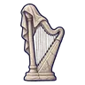

รูปปั้นผ้าคลุมหน้า
มอนธาตุวิญญาณ Lv 92–98
เจอที่
| แมพ | โซน | Lv | ภูมิภาค |
|---|---|---|---|
| สวนรูปปั้นขาว | น้ำพุแห้งกลางสวน | 92–98 | เมืองหอระฆัง |
ค่าสถานะตามเลเวล
| Lv | HP | ATK | DEF | MDEF | EXP | Job |
|---|---|---|---|---|---|---|
| 92 | 74,750 | 133–199 | 26 | 36 | 121 | 91 |
| 95 | 81,383 | 140–211 | 27 | 37 | 124 | 93 |
| 98 | 88,363 | 148–222 | 27 | 38 | 128 | 96 |
ตีด้วยธาตุไหนดี
แรงขึ้น: วิญญาณ ×1.25
เบาลง: ไม่มีธาตุ ×0.25
วัตถุดิบที่ดรอป
| ของ | โอกาส | |
|---|---|---|
| ชายผ้าคลุมหิน | 55% | 1 ชิ้น (15% ได้ 2) |
อุปกรณ์ที่ดรอป (1)
| ของ | โอกาส |
|---|---|
 เครื่องดนตรีรูปปั้นผ้าคลุมหน้า | 0.06% |
สกิล
ม่านเวท (Lv 25+) · ม่านเวท (Lv 60+) · วาร์ป (Lv 60+)